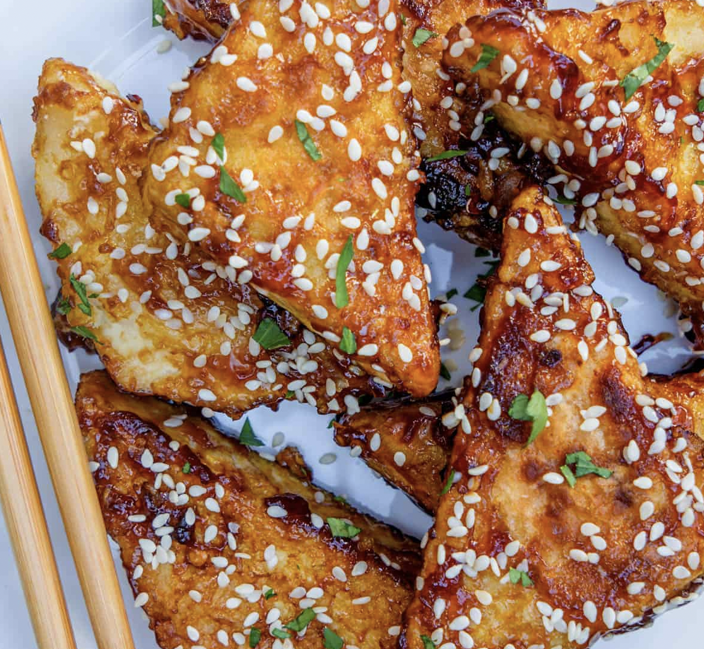

Back to all recipes
Crispy Tofu

This sweet sticky tofu takes less than 15 minutes to make and is packed with flavour! Serve with rice and vegetables to make it a complete meal, with noodles, or grab some chopsticks and enjoy them on their own.
Ingredients
- Tofu
- Sweet soy sauce
- Rice vinegar
- Garlic
- Chilli flakes
- Corn starch
- Oil
- Sesame seeds
Recipe
- To start, press the tofu so all the excess water comes out. I like to simply place the tofu in between a tea towel then place a heavy item on top and wait at least 20mintues. Then cut the tofu as you wish to eat it, in this recipe I've made diagonal cuts to get triangle shapes but you can cut into cubes as well
- Whilst the tofu is being pressed, prepare the marinade in a small bowl by adding sweet soy sauce, vinegar, grated garlic, and chili. Then add 1 tablespoon of cornstarch and 3 tbs of water. Give it a stir to combine
- At least 20 minutes have passed, coat the pressed tofu pieces in corn starch. Use your fingers to get a good coat on all the edges
- It's time to cook! In a non-stick pan, heat some oil over medium-high heat and add the tofu pieces in a single layer, making sure they don’t touch. Cook for a few minutes on both sides until you have golden and crispy tofu
- To finish, pour the marinade into the pan which will become very bubbly immediately. Quickly turn all the tofu pieces over so they are coated on both sides and serve on a dish straight away
- To serve, I like to garnish with some sesame seeds. For a complete meal, I will serve alongside rice and broccoli or Asian greens. Or just grab some chopsticks and dig in!